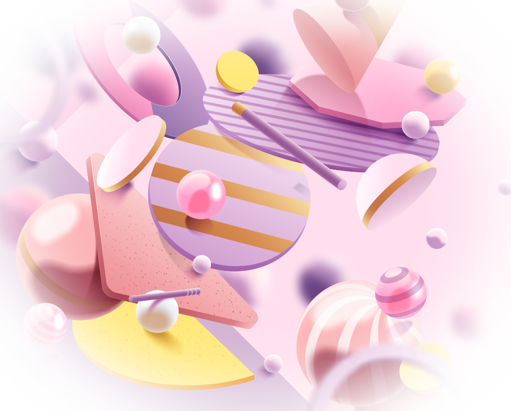

Chào nhà Bin & Su. Một năm nhiều ngày đẹp đang chờ xem lại.
Từ cái Tết ở quê nội đến buổi sáng Giáng sinh với bà, mình đã gom 1.248 tấm ảnh của cả nhà vào đúng chỗ của nó.
1.248 ảnh, 86 video, 9 nơi đã đến, 7 mục kỷ niệm



2026năm của nhà mình
Gần đây
Những tấm mới nhất mà cả nhà vừa thêm vào.


Các mục của năm
Bảy câu chuyện, do mình tự gom từ ngày giờ và nơi chụp.


Ngày này năm trước
Một năm trước
Thứ Hai, 20 tháng 10, 2025
Buổi sáng cuối tuần ở nhà, Bin cười to đến mức cả nhà phải bỏ đũa xuống. 14 ảnh khác cũng chụp vào hôm đó.
Xem lại ngày hôm đó